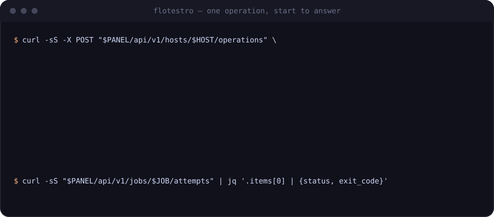

0.62.0 · Apache-2.0 · Debian · Ubuntu · Fedora · RHEL · Arch
Fleet management for Linux servers
One panel that plans, approves, carries and records every change — and never opens a shell on a host to do it.

- 129typed operations, each with its own permission, risk and lock class
- 0shells opened on a host — there is no “run a command”
- 826checks in the laboratory gate of this release, none skipped
- 0.30 sto freeze a campaign over 500 hosts, measured
What it holds to
- Typed operations only
- Every action is a versioned contract with its own permission, risk level, lock class and campaign mode. There is no type that runs an arbitrary command.
- Plans approved by digest
- The host computes the plan, an approver reads it, and the host applies it only if the content still matches the approved digest.
- Unknown is shown as unknown
- A fact the agent could not determine is empty, not zero; a missing declaration means a refusal, not consent.
- Evidence, not logs
- Every order, approval and result is an event in a hash-chained audit trail that
auditverifychecks offline, without the database. - No external monitoring stack
- Agents sample their host; the panel keeps the samples and the rollups, evaluates the rules, and holds the alerts and the silences.
The panel
Eight pages of a running installation — the fleet, a host, a campaign, the packages it would change, the security findings, the monitoring and the audit trail — are in the gallery.
How a change happens
- The host computes a plan of the change and reports its digest.
- An approver reads the plan; in production a second person approves.
- The host applies the change only if its content still matches the approved digest.
- The result, the verification and every step are written to a hash-chained audit trail.

Across a fleet the same change runs as a campaign: canary, waves, manual or automatic gates, failure thresholds, maintenance windows, per-site budgets and an offline policy per host.
What it can operate on
- Packages
- Plan, upgrade, install, remove, hold, repair; per-host plans approved by digest; agent upgrades.
- Services and processes
- Start, stop, restart, reload, enable, mask, reset-failed; unit detail; process tree; signals.
- Files and schedules
- Managed files with versions and rollback; cron entries and systemd timers.
- Network and firewall
- NetworkManager, nmstate and netplan with a connectivity watchdog; firewalld, nftables and UFW; the resolver.
- Storage
- Mounts, filesystem check and resize, LVM, SMART, device wipe.
- Containers
- Docker containers, images, prune, events and logs; Compose projects deployed against a plan.
- Kernel and security
- sysctl, modules, SELinux mode, audit rules; security checks with fleet-wide remediation.
- Time
- chrony and timesyncd, the time zone, and a source test before a source is replaced.
- Identity
- FreeIPA users, groups, HBAC and sudo rules, access simulation, domain joins; local accounts and keys.
- Certificates and backups
- Scanning, trust-anchor rotation, certmonger renewal; restic and borg runs, verification and restore.
- Monitoring
- CPU, memory, swap, filesystems, inodes and uptime sampled by the agent; alert rules and silences in the panel.
- Vulnerabilities
- Package lists correlated against the Debian, Ubuntu, Red Hat and NVD feeds; the panel reads the feeds, never the hosts.
- Campaigns
- Canary, waves, manual or automatic gates, failure thresholds, maintenance windows, per-site budgets, offline policy per host.
- Notifications
- A durable trail posted to a webhook in batches, signed with HMAC-SHA256, delivered at least once and in order.
Architecture
| Component | Runs as | Role |
|---|---|---|
flotestro-control-plane |
a container, uid 65532, read-only | API, web panel, agent gateway, enrollment, scheduler, campaign engine, PKI; keeps everything it remembers in PostgreSQL |
flotestro-agent |
unprivileged user on every host | one mTLS session to the gateway; inventory, metrics, plans; hands privileged steps to the helper |
flotestro-agent-helper |
root, socket-activated | executes the fixed set of privileged operations over a local socket; no network |
flotestro-relay |
a container of its own, one per isolated site | terminates the agent sessions of a site and forwards them; buffers results during an outage |
Hosts hold a certificate from the fleet CA, issued at enrollment from a key that never leaves the host, renewed by the agent itself and revoked when superseded. Enrollment tokens are one-time and stored as digests. Users sign in through OpenID Connect; roles come from group mappings scoped by site and environment, and a sensitive action needs step-up authentication. Secrets are fetched by the host under a short lease and never travel in a task. PostgreSQL is the only source of truth: the panel keeps the fleet state nowhere else.
| Port | Service |
|---|---|
| 8080 | panel and API; loopback by default, put behind a TLS proxy |
| 8443 | agent gateway (mTLS) |
| 8444 | enrollment (TLS) |
| 8453 | relay |
Install
Nothing to build and nothing to clone. The panel runs from a published image; the hosts take a package from the project’s signed repository.
The panel, with a database of its own
curl -fsSLO https://raw.githubusercontent.com/ultherego/Flotestro/main/docker/compose.yaml
docker compose up -d
docker compose cp control-plane:/var/lib/flotestro/bootstrap-token .Every setting has a working default, so that is a panel on
http://localhost:8080. The bootstrap token is the first sign-in; map the
identity provider’s groups to roles, then delete it.
To serve hosts on other machines, set FLOTESTRO_ADVERTISE in
.env to the name the fleet really reaches this panel at: it enters the agent
gateway’s certificate, and a panel left on loopback refuses a remote enrollment
rather than issuing a certificate that host would reject.
env.example carries the whole list.
Against a database you already run, add
compose.external-db.yaml: it takes the local database out, holds the DSN to a
verified server and a writer, and brings the schema forward as a run of its own before
anything serves. The DSN goes into secrets/database-url before the first start,
and the same file works under Docker and rootless Podman, on a host with SELinux and
without. The backup pair, an isolated site, pinning a digest and upgrading are in
docker/README.md.
Which image
The control plane is ghcr.io/ultherego/flotestro-control-plane, and the
relay ghcr.io/ultherego/flotestro-relay. A release publishes the full
version and sha-<twelve characters of the commit>, and neither is ever
rewritten; a finished release also moves latest and the minor alias, a
pre-release moves neither. The tag is what a human reads — production pins the digest the
release run printed.
A host, from the package repository
Debian and Ubuntu
sudo install -d -m 0755 /etc/apt/keyrings
curl -fsS https://ultherego.github.io/Flotestro/packages/flotestro-repo.asc | sudo tee /etc/apt/keyrings/flotestro.asc >/dev/null
echo 'deb [signed-by=/etc/apt/keyrings/flotestro.asc] https://ultherego.github.io/Flotestro/packages/deb stable main' | sudo tee /etc/apt/sources.list.d/flotestro.list >/dev/null
sudo apt update && sudo apt install flotestro-agentRHEL and Fedora
sudo rpm --import https://ultherego.github.io/Flotestro/packages/flotestro-repo.asc
printf '%s\n' '[flotestro]' 'name=Flotestro' 'baseurl=https://ultherego.github.io/Flotestro/packages/rpm/stable' \
'enabled=1' 'gpgcheck=1' 'repo_gpgcheck=1' 'gpgkey=https://ultherego.github.io/Flotestro/packages/flotestro-repo.asc' \
| sudo tee /etc/yum.repos.d/flotestro.repo >/dev/null
sudo dnf install -y flotestro-agentArch Linux
curl -fsS https://ultherego.github.io/Flotestro/packages/flotestro-repo.asc | sudo pacman-key --add -
sudo pacman-key --lsign-key "$(curl -fsS https://ultherego.github.io/Flotestro/packages/flotestro-repo.asc \
| gpg --show-keys --with-colons | awk -F: '/^fpr:/ {print $10; exit}')"
printf '%s\n' '[flotestro]' 'SigLevel = Required DatabaseRequired' \
'Server = https://ultherego.github.io/Flotestro/packages/arch/stable' | sudo tee -a /etc/pacman.conf >/dev/null
sudo pacman -Sy && sudo pacman -S --noconfirm flotestro-agentEvery index in the repository is signed by the release key, and there is no
version in any of those lines: apt update is how a host learns a newer version
exists and apt upgrade is what moves it. A pre-release goes to a
testing channel that a host asking for stable never reads. Without
a route out, the package is fetched on a connected machine, verified against
SHA256SUMS and carried in; each asset also carries a build attestation that
gh attestation verify checks.
Then enroll the host
The panel writes the exact commands for its own addresses under Add host — the repository, the package, the fleet CA with the fingerprint to compare, the one-time token and the start. The shape of the last two steps:
sudo tee /var/lib/flotestro-agent/ca.pem >/dev/null # the fleet CA, fingerprint shown in the panel
# /etc/flotestro/agent.yaml is composed by the panel and carries the two
# addresses; a host that was given the file needs nothing edited here:
# connection:
# enrollment_url: "https://panel.example.org:8444"
# gateway_urls:
# - "https://panel.example.org:8443"
printf '%s' "$TOKEN" | sudo -u flotestro-agent flotestro-agentctl enroll # one-time, from the panel
sudo systemctl enable --now flotestro-agent
flotestro-agentctl diagnose # explains a host that does not show upThe token is one-time and short-lived
Pass it by file or on standard input, never in the environment:
sudo -u flotestro-agent flotestro-agentctl enroll --token-file /run/token, and
delete the file afterwards. A host that still holds an identity from a previous
installation is refused with machine_already_enrolled: a new
fleet CA does not recognise certificates the previous one issued.
For a whole inventory at once there is an Ansible role in
ansible;
for a site behind a relay, docker/compose.relay.yaml. Installing from nothing,
end to end, is the
installation runbook.
Documentation
-
Installing, configuring and operating an installation, and the runbooks for what goes wrong.
-
The signed apt, dnf and pacman repositories the hosts install the agent from.
-
The Go services, the panel, the migrations and the packaging, with the checks that run on every push.
-
Packages for amd64 and arm64 with their checksums, signatures and bills of materials.